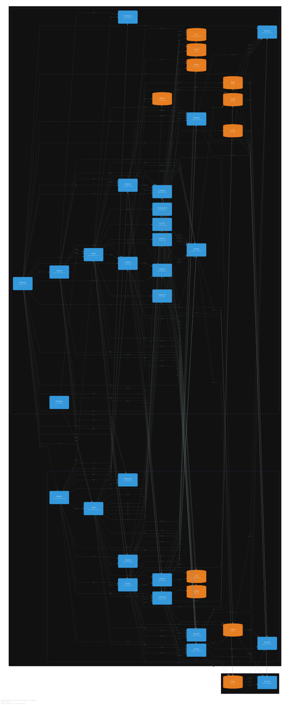

دیدگاه استقرار¶
نمای کلی¶
دیدگاه استقرار، نحوه توزیع فیزیکی مؤلفههای سامانه را در محیطهای مختلف نشان میدهد و به تیمهای عملیاتی کمک میکند تا درک درستی از نحوه اجرا، مقیاسپذیری و مدیریت سامانه در زیرساخت ابری داشته باشند.
این دیدگاه، چهارمین سطح از مدلسازی C4 را تشکیل میدهد و بر اساس کد معماری، سامانه در یک خوشه کوکرنیتس بر روی بستر ابری آمازون وب سرویسها مستقر شده است. ساختار استقرار شامل دو منطقه در دسترس در منطقه اصلی و یک منطقه پشتیبان برای بازیابی در شرایط فاجعه میباشد.
نمودار استقرار¶

نمودار ۴: دیدگاه استقرار سامانه فروشگاه اینترنتی
شرح نمودار استقرار¶
نمودار استقرار، توزیع فیزیکی مؤلفههای سامانه را در دو منطقه جغرافیایی نشان میدهد و نحوه توزیع نمونههای کانتینری را در گرههای مختلف به تصویر میکشد.
همانطور که در نمودار مشاهده میشود، سامانه در یک خوشه کوکرنیتس بر روی بستر ابری آمازون وب سرویسها مستقر شده است. این خوشه شامل دو منطقه در دسترس در منطقه اصلی و یک منطقه پشتیبان برای بازیابی در شرایط فاجعه میباشد.
مؤلفههای اصلی در نمودار استقرار عبارتند از:
-
گره استقرار خوشه کوکرنیتس که شامل تمام سرویسها و پایگاههای داده در منطقه اصلی شرق آمریکا است.
-
منطقه در دسترس اول و دوم که دو منطقه مجزا برای تأمین دسترسپذیری بالا هستند.
-
گره استقرار منطقه بازیابی در شرایط فاجعه که شامل مؤلفههای ضروری برای بازیابی در غرب آمریکا است.
-
نمونههای کانتینری که هر کدام با تعداد نمونههای مشخص و منابع تخصیصیافته در نمودار نمایش داده شدهاند.
-
ارتباطات بین گرهها که نشاندهنده جریان دادهها و همگامسازی بین مناطق مختلف است.
استراتژی استقرار¶
سامانه فروشگاه اینترنتی با استفاده از کوکرنیتس بر روی بستر ابری آمازون وب سرویسها مستقر شده است. استراتژی استقرار بر اساس چهار اصل کلیدی زیر طراحی گردیده است:
اصل یکم: دسترسپذیری بالا
سامانه در دو منطقه جغرافیایی مجزا با قابلیت جابهجایی خودکار مستقر میشود. این رویکرد تضمین میکند که در صورت بروز مشکل در یک منطقه، ترافیک بهصورت خودکار به منطقه دیگر هدایت گردد و سامانه بدون وقفه به提供服务 ادامه دهد.
اصل دوم: مقیاسپذیری خودکار
تعداد نمونههای هر سرویس بهصورت خودکار بر اساس بار دریافتی تنظیم میگردد. این قابلیت با استفاده از مقیاسکننده خودکار پاد افقی در کوکرنیتس پیادهسازی شده است و امکان پاسخگویی به نوسانات ترافیک را فراهم میکند.
اصل سوم: استقرار بدون وقفه
بهروزرسانی سرویسها بهصورت تدریجی و با استفاده از بهروزرسانی چرخشی انجام میشود. این روش تضمین میکند که در حین بهروزرسانی، هیچ اختلالی در提供服务 ایجاد نشود و کاربران قطعی را احساس نکنند.
اصل چهارم: بازیابی در شرایط فاجعه
منطقه پشتیبان با قابلیت بازیابی در کمتر از پانزده دقیقه پیشبینی شده است. این رویکرد با هدف زمان بازیابی پانزده دقیقه و هدف نقطه بازیابی شش ساعت طراحی گردیده و امکان بازگشت سریع به حالت عملیاتی را فراهم میکند.
محیط استقرار: تولید¶
محیط تولید، محیط اصلی اجرای سامانه است و شامل سه گره استقرار اصلی میباشد.
گره استقرار خوشه کوکرنیتس در منطقه اصلی¶
این گره در شرق آمریکا و با استفاده از سرویس کوکرنیتس الاستیک آمازون مستقر شده است.
مشخصات این گره عبارتند از:
-
بستر ابری: آمازون وب سرویسها
-
منطقه جغرافیایی: us-east-1
-
سرویس مدیریت خوشه: سرویس کوکرنیتس الاستیک آمازون
منطقه در دسترس اول¶
این منطقه شامل بیست و سه مؤلفه اصلی با تعداد نمونهها و منابع مشخص است که در پنج دسته زیر سازماندهی شدهاند:
برنامههای کاربردی:
| مؤلفه | تعداد نمونه | CPU درخواستی | حافظه درخواستی |
|---|---|---|---|
| برنامه وب | ۳ | ۵۰۰ میلیواحد | ۵۱۲ مگابایت |
| برنامه موبایل | ۲ | ۲۵۰ میلیواحد | ۲۵۶ مگابایت |
زیرساخت ارتباطی و امنیت:
| مؤلفه | تعداد نمونه | CPU درخواستی | حافظه درخواستی |
|---|---|---|---|
| دروازه رابط برنامهنویسی | ۲ | ۲۰۰ میلیواحد | ۲۵۶ مگابایت |
| لایه مقاومسازی | ۳ | ۲۵۰ میلیواحد | ۵۱۲ مگابایت |
سرویسهای حوزه کسبوکار:
| مؤلفه | تعداد نمونه | CPU درخواستی | حافظه درخواستی |
|---|---|---|---|
| سرویس احراز هویت | ۲ | ۵۰۰ میلیواحد | ۱ گیگابایت |
| سرویس کاتالوگ | ۳ | ۵۰۰ میلیواحد | ۱ گیگابایت |
| سرویس موجودی | ۲ | ۵۰۰ میلیواحد | ۱ گیگابایت |
| سرویس سفارش | ۳ | ۵۰۰ میلیواحد | ۱ گیگابایت |
| سرویس پرداخت | ۲ | ۲۵۰ میلیواحد | ۵۱۲ مگابایت |
| سرویس فروشنده | ۲ | ۵۰۰ میلیواحد | ۱ گیگابایت |
| سرویس اطلاعرسانی | ۲ | ۲۵۰ میلیواحد | ۵۱۲ مگابایت |
سرویسهای پشتیبانی و تحلیل:
| مؤلفه | تعداد نمونه | CPU درخواستی | حافظه درخواستی |
|---|---|---|---|
| سرویس جستجو | ۲ | ۱ واحد | ۲ گیگابایت |
| سرویس توصیهگر | ۲ | ۱ واحد | ۲ گیگابایت |
| سرویس تحلیل | ۱ | ۲ واحد | ۴ گیگابایت |
پایش و مشاهدهپذیری:
| مؤلفه | تعداد نمونه | CPU درخواستی | حافظه درخواستی |
|---|---|---|---|
| پشته پایش | ۱ | ۲ واحد | ۴ گیگابایت |
زیرساخت داده:
| مؤلفه | تعداد نمونه | CPU درخواستی | حافظه درخواستی | ذخیرهسازی |
|---|---|---|---|---|
| کافکا | ۳ | ۱ واحد | ۲ گیگابایت | ۱۰۰ گیگابایت |
| حافظه نهان | ۳ | ۵۰۰ میلیواحد | ۱ گیگابایت | - |
| پایگاه داده MongoDB | ۳ | ۱ واحد | ۲ گیگابایت | ۲۰۰ گیگابایت |
| موتور جستجو | ۳ | ۲ واحد | ۴ گیگابایت | ۵۰۰ گیگابایت |
| ذخیرهسازی اشیاء | ۱ | ۲۵۰ میلیواحد | ۵۱۲ مگابایت | ۱ ترابایت |
| پایگاه داده PostgreSQL | ۳ | ۱ واحد | ۲ گیگابایت | ۱۰۰ گیگابایت |
| پایگاه داده ClickHouse | ۲ | ۲ واحد | ۴ گیگابایت | ۲۰۰ گیگابایت |
پشتیبانگیری و بازیابی:
| مؤلفه | تعداد نمونه | CPU درخواستی | حافظه درخواستی | ذخیرهسازی |
|---|---|---|---|---|
| سرویس پشتیبانگیری | ۲ | ۵۰۰ میلیواحد | ۱ گیگابایت | ۱ ترابایت |
منطقه در دسترس دوم¶
این منطقه شامل مؤلفههای اصلی با تعداد نمونههای کمتر برای تأمین دسترسپذیری بالا است:
| مؤلفه | تعداد نمونه |
|---|---|
| برنامه وب | ۲ |
| دروازه رابط برنامهنویسی | ۲ |
| سرویس احراز هویت | ۱ |
| سرویس کاتالوگ | ۲ |
| سرویس موجودی | ۱ |
| سرویس سفارش | ۲ |
| سرویس پرداخت | ۱ |
| سرویس فروشنده | ۱ |
| کافکا | ۲ |
| حافظه نهان | ۲ |
| پایگاه داده PostgreSQL | ۲ |
| لایه مقاومسازی | ۲ |
| سرویس پشتیبانگیری | ۱ |
گره استقرار منطقه بازیابی در شرایط فاجعه¶
این گره در غرب آمریکا مستقر شده و در حالت غیرفعال قرار دارد.
مشخصات این گره عبارتند از:
-
هدف: بازیابی در شرایط فاجعه
-
حالت جابهجایی: فعال-غیرفعال
-
هدف زمان بازیابی: پانزده دقیقه
-
هدف نقطه بازیابی: شش ساعت
| مؤلفه | تعداد نمونه | حالت | توضیح |
|---|---|---|---|
| سرویس پشتیبانگیری | ۱ | آمادهبهکار | برای بازیابی دادهها در شرایط فاجعه آماده است. |
| پایگاه داده PostgreSQL | ۱ | کپی | همگامسازی دادهها با منطقه اصلی بهصورت پیوسته انجام میشود. |
جریان دادهها در محیط استقرار¶
بر اساس کد معماری، جریان دادهها در محیط استقرار به صورت زیر است:
جریان ترافیک کاربران:
کاربران از طریق برنامه وب یا برنامه موبایل به سامانه متصل میشوند. درخواستها از طریق شبکه توزیع محتوا به دروازه رابط برنامهنویسی ارسال میشوند. دروازه رابط برنامهنویسی درخواستها را به سرویسهای مناسب مسیریابی میکند.
جریان ارتباطات بین سرویسها:
سرویسهای کسبوکار از طریق رابط برنامهنویسی RESTful با یکدیگر ارتباط برقرار میکنند. رویدادها از طریق کافکا بین سرویسها جابهجا میشوند. سرویسها برای کاهش بار پایگاه داده از حافظه نهان استفاده میکنند.
جریان ارتباط با سامانههای خارجی:
سرویس پرداخت از طریق اینترنت به درگاه پرداخت متصل میشود. سرویس سفارش از طریق اینترنت به سامانه لجستیک متصل میشود. سرویس اطلاعرسانی از طریق اینترنت به سرویسهای ایمیل و پیامک متصل میشود.
جریان پایش و مشاهدهپذیری:
پرومتئوس معیارها را از تمام سرویسها جمعآوری میکند. یاگر ردگیریهای توزیعشده را از تمام سرویسها دریافت میکند. پشته ELK لاگها را از تمام سرویسها جمعآوری میکند.
اهداف بازیابی در شرایط فاجعه¶
برای تأمین دسترسپذیری بالا و مقاومسازی سامانه در برابر حوادث غیرمترقبه، اهداف بازیابی زیر تعریف گردیده است:
| معیار | مقدار | توضیح |
|---|---|---|
| هدف زمان بازیابی¹ | کمتر از ۱۵ دقیقه | حداکثر زمان مجاز برای بازیابی سامانه پس از بروز فاجعه. |
| هدف نقطه بازیابی² | حداکثر ۶ ساعت | حداکثر میزان از دست دادن داده قابل قبول در هنگام بازیابی. |
استراتژی پشتیبانگیری¶
پشتیبانگیری از مؤلفههای حالتدار سامانه به صورت زمانبندیشده انجام میشود و در منطقه پشتیبان ذخیره میگردد:
| مؤلفه | بازه پشتیبانگیری | مقصد | ابزار |
|---|---|---|---|
| پایگاه داده PostgreSQL | هر ۶ ساعت | ذخیرهسازی ابری S3 | pg_dump³ |
| پایگاه داده MongoDB | هر ۶ ساعت | ذخیرهسازی ابری S3 | mongodump⁴ |
| پایگاه داده ClickHouse | هر ۱۲ ساعت | ذخیرهسازی ابری S3 | پشتیبانگیری ClickHouse |
پانویسها¶
¹ هدف زمان بازیابی حداکثر زمان مجاز برای بازیابی سامانه و بازگرداندن آن به حالت عملیاتی پس از بروز فاجعه. این معیار بر اساس توافقات سطح خدمات با کسبوکار تعیین شده است.
² هدف نقطه بازیابی حداکثر میزان از دست دادن داده که در هنگام بازیابی پس از فاجعه قابل قبول است. این معیار بر اساس زمان آخرین پشتیبانگیری موفق تعیین میشود و نشاندهنده فاصله زمانی بین پشتیبانگیریهاست.
³ pg_dump ابزار خط فرمان برای تهیه پشتیبان از پایگاه داده PostgreSQL به صورت منطقی که شامل دستورات SQL برای بازسازی پایگاه داده است.
⁴ mongodump ابزار خط فرمان برای تهیه پشتیبان از پایگاه داده MongoDB به صورت باینری که شامل مجموعههای داده و متادیتای آنهاست.